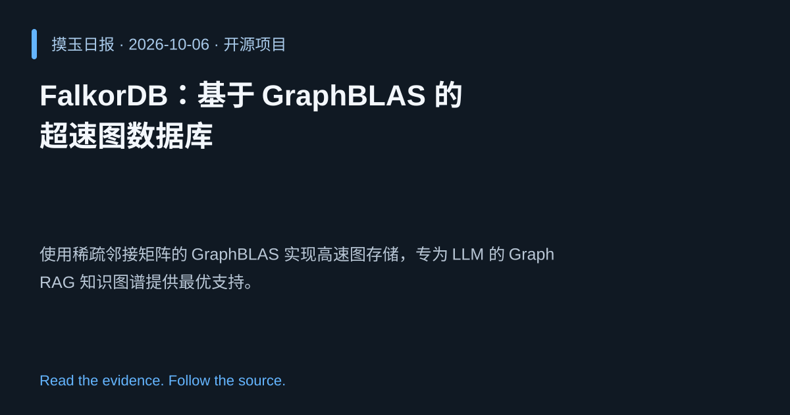

2026-10-06 · Asia/Shanghai · 开源项目 · #3
FalkorDB：基于 GraphBLAS 的超速图数据库
FalkorDB/FalkorDB
使用稀疏邻接矩阵的 GraphBLAS 实现高速图存储，专为 LLM 的 GraphRAG 知识图谱提供最优支持。
为什么值得关注
为大语言模型的图检索与推理提供低延迟、可扩展的底层图数据库，提升检索增强生成效果。
- 内部采用 GraphBLAS 稀疏矩阵，查询速度极快。
- Rust 实现，兼顾安全性与性能。
- 针对 LLM 的 GraphRAG 场景进行优化。

热度 54.9 / 100；排名与评分保留该期记录。